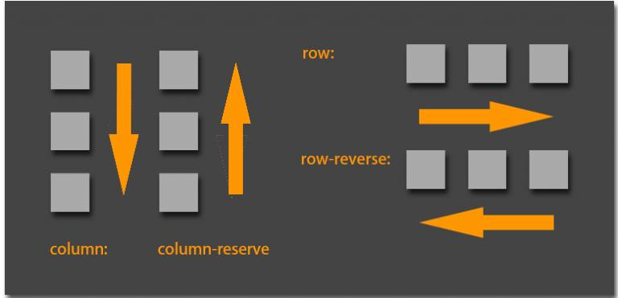
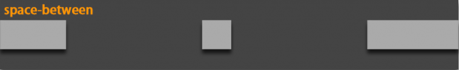
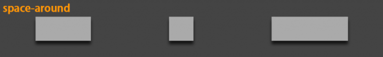
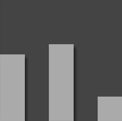
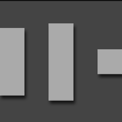
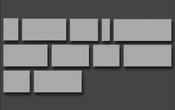
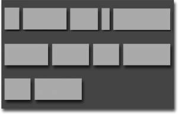
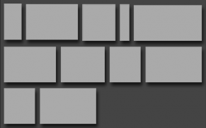
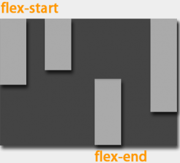

Flex是Flexible Box的缩写，意为“弹性盒子”，用来为盒装模型提供最大的灵活性。任何一个容器都可以指定为Flex布局。
1 | 1 <style> |
一、概念
采用Flex布局的元素，被称为Flex容器(flex container)，简称“容器”。其所有子元素自动成为容器成员，成为Flex项目(Flex item)，简称“项目”。

容器默认存在两根主轴：水平方向主轴(main axis)和垂直方向交叉轴(cross axis)，默认项目按主轴排列。
- main start/main end：主轴开始位置/结束位置；
- cross start/cross end：交叉轴开始位置/结束位置；
- main size/cross size：单个项目占据主轴/交叉轴的空间；
二、属性
- flex-direction
- flex-wrap
- flex-flow
- justify-content
- align-item
- align-content
1） flex-direction属性：决定主轴的方向（即项目的排列方向）
1 | 1 .box { |
- row（默认）：主轴水平方向，起点在左端；
- row-reverse：主轴水平方向，起点在右端；
- column：主轴垂直方向，起点在上边沿；
- column-reserve：主轴垂直方向，起点在下边沿。

2） flex-wrap属性：定义换行情况
默认情况项目都排列在一条轴线上，但有可能一条轴线排不下。
1 | 1 .box{ |
- nowrap（默认）：不换行
- wrap：换行，第一行在上方
- wrap-reverse：换行，第一行在下方

3） flex-flow ： flex-direction 和 flex-wrap 属性的复合属性
1 | 1 .box { |
4） justify-content ： 定义了项目在主轴上的对齐方式
1 | 1 .box { |
- flex-start（默认值）：左对齐
- flex-end：右对齐
- center： 居中
- space-between：两端对齐，项目之间的间隔都相等
- space-around：每个项目两侧的间隔相等。所以，项目之间的间隔比项目与边框的间隔大一倍




5） align-items : 定义项目在交叉轴上如何对齐
1 | 1 .box { |
- flex-start：交叉轴的起点对齐
- flex-end：交叉轴的终点对齐
- center：交叉轴的中点对齐
- baseline: 项目的第一行文字的基线对齐
- stretch（默认值）：如果项目未设置高度或设为auto，将占满整个容器的高度
align-items:flex-start

align-items:flex-end

align-items:baseline

align-items:center

align-items:stretch

6） align-content : 定义了多根轴线的对齐方式。如果项目只有一根轴线，该属性不起作用
- flex-start：与交叉轴的起点对齐
- flex-end：与交叉轴的终点对齐
- center：与交叉轴的中点对齐
- space-between：与交叉轴两端对齐，轴线之间的间隔平均分布
- space-around：每根轴线两侧的间隔都相等。所以，轴线之间的间隔比轴线与边框的间隔大一倍
- stretch（默认值）：轴线占满整个交叉轴
align-content:flex-start

align-content:flex-end

align-content:center

align-content:space-between

align-content:space-around

align-content:stretch

三、项目属性
以下6个属性设置在项目上
- order
- flex-grow
- flex-shrink
- flex-basis
- flex
- align-self
1）order
定义项目的排列顺序。数值越小，排列越靠前，默认为0
1 | 1 .item { |
2） flex-grow
定义项目的放大比例，默认为0，即如果存在剩余空间，也不放大
1 | 1 .item { |


1 | 如果所有项目的flex-grow属性都为1，则它们将等分 |
3） flex-shrink
定义了项目的缩小比例，默认为1，即如果空间不足，该项目将缩小
1 | 1 .item { |
如果所有项目的flex-shrink属性都为1，当空间不足时，都将等比例缩小。如果一个项目的flex-shrink属性为0，其他项目都为1，则空间不足时，前者不缩小。
负值对该属性无效。
4） flex-basis
定义了在分配多余空间之前，项目占据的主轴空间（main size）。浏览器根据这个属性，计算主轴是否有多余空间。它的默认值为auto，即项目的本来大小
1 | 1 .item { |
它可以设为跟width或height属性一样的值（比如350px），则项目将占据固定空间
5） flex
是flex-grow, flex-shrink 和 flex-basis的简写，默认值为0 1 auto。后两个属性可选
1 | 1 .item { |
该属性有两个快捷值：auto (1 1 auto) 和 none (0 0 auto)。
建议优先使用这个属性，而不是单独写三个分离的属性，因为浏览器会推算相关值
6） align-self
允许单个项目有与其他项目不一样的对齐方式，可覆盖align-items属性。默认值为auto，表示继承父元素的align-items属性，如果没有父元素，则等同于stretch
1 | 1 .item { |

该属性可能取6个值，除了auto，其他都与
align-items属性完全一致